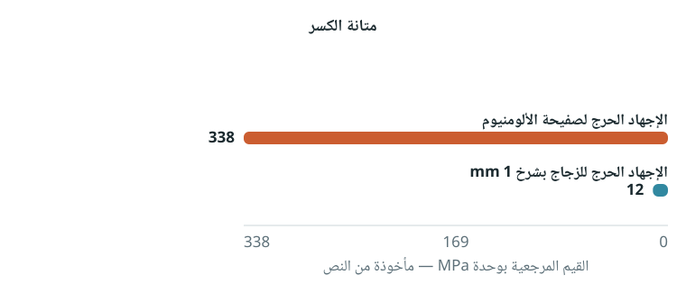

متانة الكسر
Fracture toughness
متانة الكسر تقيس مقاومة مادة تحتوي شرخاً لانتشار ذلك الشرخ: K_IC = Y·σ·√(πa). وهي خاصية مادية لا تعتمد على شكل القطعة، وتُستعمل لتحديد الإجهاد المسموح في وجود عيوب، ولاختيار المواد في الطائرات وأنابيب الضغط.
في أي مادة هندسية توجد شقوق صغيرة لا يمكن كشفها كلها. وحين يُسلَّط إجهاد على مادة فيها شرخ، يتركز الإجهاد عند طرف الشرخ بمقدار يتناسب مع جذر طول الشرخ. ويُعرَّف معامل شدة الإجهاد K = Y·σ·√(πa)، حيث σ الإجهاد المسلَّط وa نصف طول الشرخ وY معامل هندسي يعتمد على شكل الشرخ والقطعة. وعندما يبلغ K قيمة حرجة K_IC خاصة بالمادة، ينتشر الشرخ سريعاً وينكسر الجسم. مثال: صفيحة ألومنيوم K_IC = 30 MPa·√m وY = 1.12، فيها شرخ نصف طوله 2.00 mm: الإجهاد الحرج σ = 30/(1.12×√(π×0.002 00)) = 30/(1.12×0.0793) = 338 MPa.
كيف تعمل الظاهرة؟
طرف الشرخ يضخّم الإجهاد المسلَّط بمعامل يتناسب مع جذر طول الشرخ مقسوماً على نصف قطر الطرف. فكلما كان الشرخ أطول أو طرفه أحدّ زاد التركيز. وعندما يبلغ الإجهاد عند الطرف مقاومة تماسك الذرات، تنكسر الرابطة الأولى، فيتقدم الشرخ خطوة، فيزداد طوله فيزداد التركيز، فتتسارع العملية حتى الكسر. ولهذا لا تعتمد متانة الكسر على شكل القطعة بل على المادة وبنيتها الدقيقة: الحبيبات الدقيقة والمسامية المنخفضة ترفع المتانة.
العلاقة بالأرقام
K = Y·σ·√(πa)، وعند الانهيار K = K_IC. مثال: ألومنيوم K_IC = 30 MPa·√m، Y = 1.12، a = 2.00 mm → σ = 30/(1.12×√(π×0.002)) = 30/(1.12×0.0793) = 338 MPa. ولو تضاعف طول الشرخ إلى 4.00 mm لنقص الإجهاد الحرج بمعامل √2 إلى 239 MPa، أي أن مضاعفة الشرخ تخفض التحمل 29%.
مفاهيم متقاربة
يُفرَّق بين متانة الكسر ومقاومة الشد: الأولى تعتمد على وجود عيب، والثانية على المادة السليمة. ويُفرَّق بين K معامل شدة الإجهاد وK_IC خاصية المادة الحرجة: الأول يعتمد على الحمل والهندسة، والثاني ثابت للمادة. ويُفرَّق بين المتانة والصلادة: الصلادة مقاومة الخدش، والمتانة مقاومة انتشار الشرخ. وأخيراً يُفرَّق بين الكسر الهش والكسر المطيل: الأول بلا تشوه لدن، والثاني يمتص طاقة أكبر قبل الانهيار.
حدود التطبيق
المعادلة صالحة حين تكون منطقة التشوه اللدن عند طرف الشرخ صغيرة مقارنة بأبعاد الشرخ والقطعة، وهو ما يُسمّى شرط الميكانيكا المرنة الخطية. ولا تصلح للمواد المطيلة جداً كالفولاذ الطري، حيث يلزم معامل J أو تشوه فتح الطرف. ولا تصف نمو الشرخ بالتعب، حيث يتقدم الشرخ بدورات متكررة أقل من الحمل الحرج. ولا تُستعمل دون قياس على المادة نفسها، لأن المتانة تتغير بالمعالجة الحرارية واللحام.

| الكمية | القيمة | المصدر |
|---|---|---|
| الإجهاد الحرج لصفيحة الألومنيوم | 338 MPa | [1] |
| الإجهاد الحرج للزجاج بشرخ 1 mm | 12.0 MPa | [1] |
المصادر
- 1 CODATA Value: molar gas constant — NIST — CODATA 2022 recommended values (2024). physics.nist.gov/cgi-bin/cuu/Value?r · اطُّلع عليه 2026-11-22
- 2 The International System of Units (SI), 9th edition (2019) — BIPM — Bureau International des Poids et Mesures (2019). www.bipm.org/en/publications/si-brochure · اطُّلع عليه 2026-11-22
- 3 The International System of Units (SI), 9th edition (2019) — BIPM — Bureau International des Poids et Mesures (2019). www.bipm.org/en/publications/si-brochure · اطُّلع عليه 2026-11-22
استشهد بهذا المصطلح
الصيغتان مبنيتان من بيانات الصفحة نفسها: العنوان والتاريخ ورابط النسخة المنشورة.
متانة الكسر — Fracture toughness. (2026). ديوان المعرفة — انفراد. https://infiradev.com/diwan/terms/term-fracture-toughness.html
@misc{term-fracture-toughness2026,
title = {متانة الكسر},
titleaddon = {Fracture toughness},
howpublished = {{ديوان المعرفة — انفراد} — مرجع علمي عربي},
year = {2026},
url = {https://infiradev.com/diwan/terms/term-fracture-toughness.html},
urldate = {2026-11-26},
note = {مراجعة علمية: hermes (مراجعة معتمدة 2026-11-26)}
}
راجعه: hermes (مراجعة معتمدة 2026-11-26) · 2026-11-26 · آخر تحديث 2026-11-22